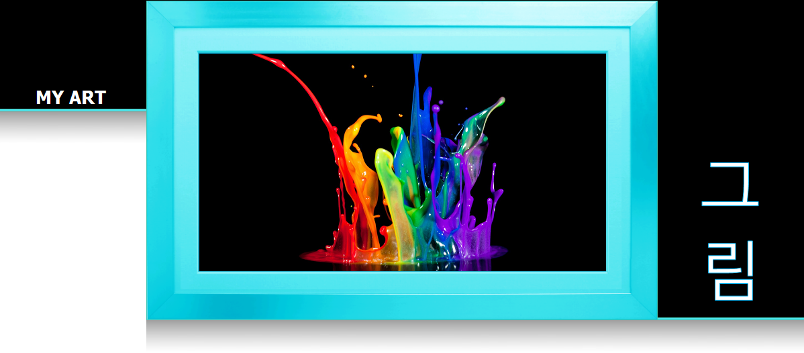
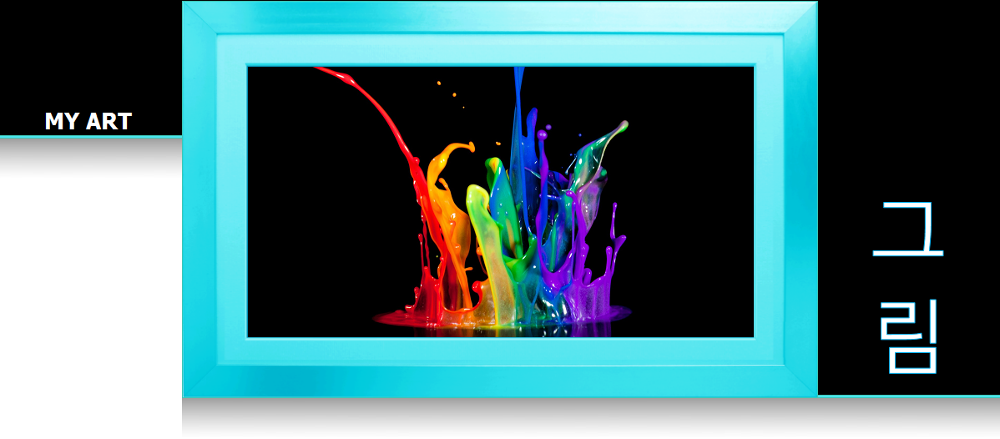
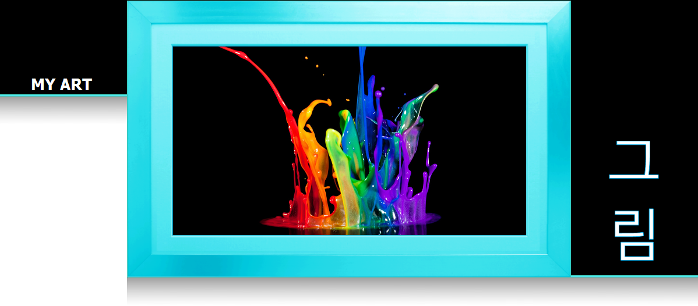
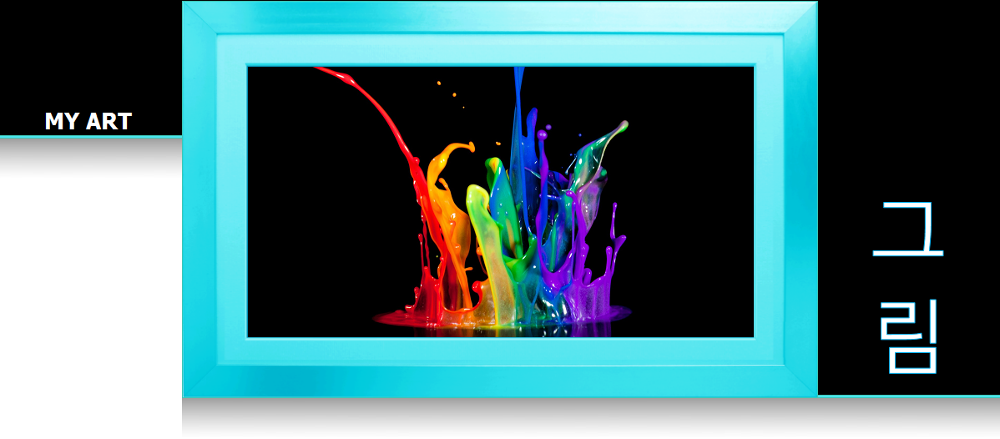

Visual Art shouldnt be something that is predictable, because it can come in many forms. There is no such thing as a perfect style, which is why I believe that variety is key to achieving a continued universal appreciation. Some of the visual art styles that I enjoy working with include Traditional Drawing, Animation, Pixel Art, Technical Graphics and 3D Modelling to name just a few. From a young age I have found a great enjoyment in design and creation, and so I decided to create a DeviantArt account to showcase my Artistic skills. Please take the time to view some of my work here.